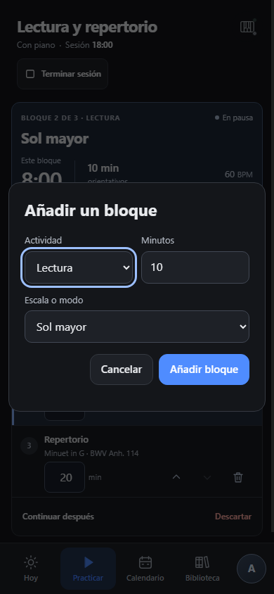
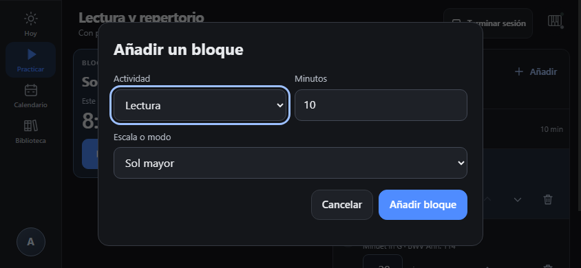
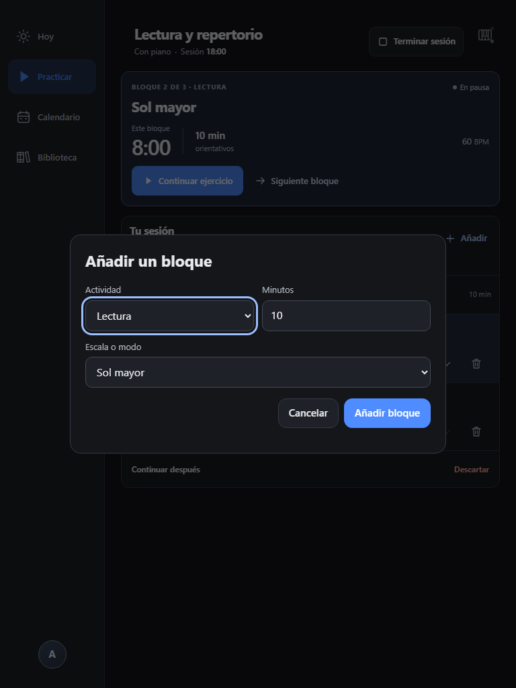
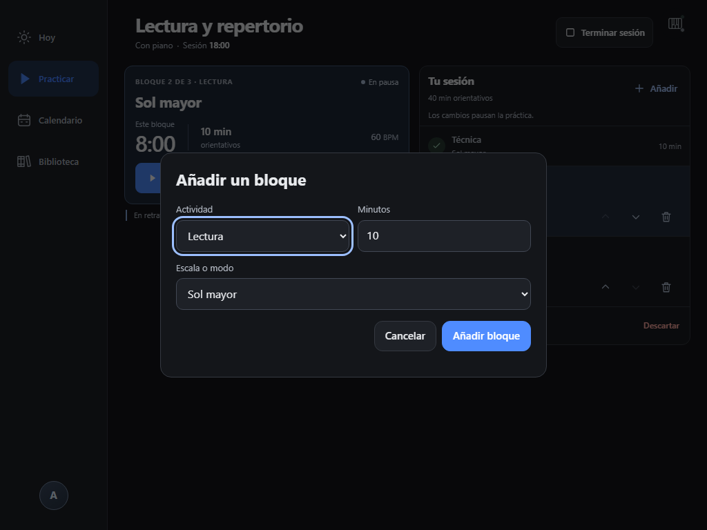
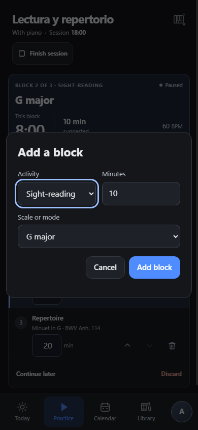
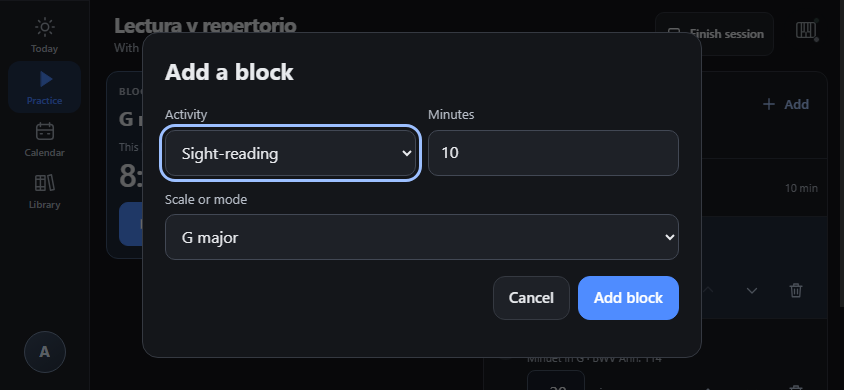
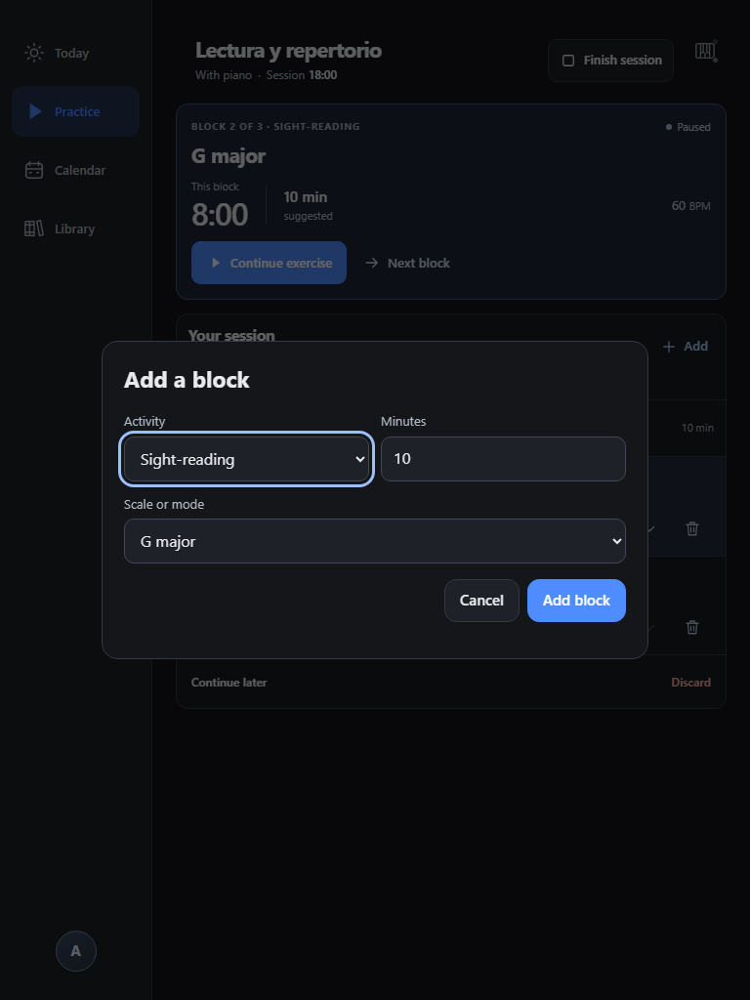
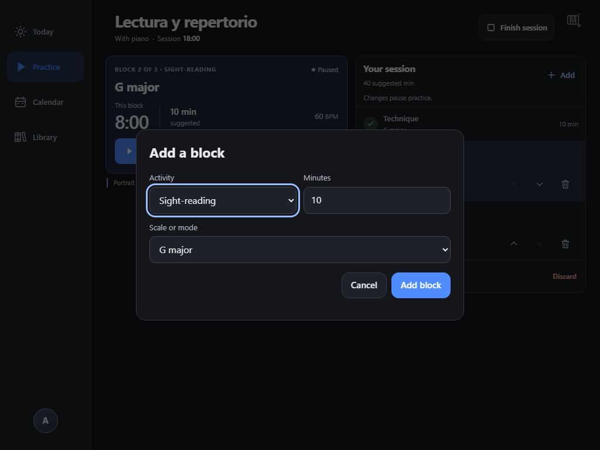

Phone portrait
390 × 844 CSS px · Spanish

SPino · PRACTICE-01 · 2026-10-01-add-block
The compact dialog reached from an unfinished practice session. Each image uses the same isolated synthetic notebook; only the display language changes.
Responsive Chromium captures, not native Android or iOS acceptance. Eight views were checked: no horizontal overflow, the entire dialog fits, and the submit button remains visible. Changing to Repertoire shows its required work selector and hides the scale selector.
390 × 844 CSS px · Spanish

844 × 390 CSS px · Spanish

768 × 1024 CSS px · Spanish

1024 × 768 CSS px · Spanish

390 × 844 CSS px · English

844 × 390 CSS px · English

768 × 1024 CSS px · English

1024 × 768 CSS px · English

Capture metadata, probes and source hashes · Original artifact metadata · Spanish fixture · English fixture
Screenshots and fixtures are preserved byte-for-byte. The installed personal notebook was never used or changed.